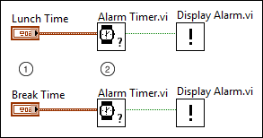

By default, LabVIEW configures VIs for non-reentrant execution. In non-reentrant execution, when a VI is called as a subVI simultaneously by other VIs, only one of those calls can enter and execute the subVI at a time. LabVIEW ensures that callers of the non-reentrant subVI take turns using the subVI. A non-reentrant VI has only a single data space to store the parameters of its callers, any temporary values computed during execution, and any state that the non-reentrant VI maintains between calls. However, if you configure a VI for reentrant execution, LabVIEW can enter and execute the reentrant VI simultaneously from all callers. In reentrant execution, LabVIEW allocates multiple instances, or clones, of the data space so that each call site, or usage of the subVI on the block diagram of the caller, can execute simultaneously, in parallel, such that each call site uses a separate clone.
|
Note�� (FPGA Module) FPGA VIs are reentrant by default. |
LabVIEW provides the following types of reentrant VIs:
To configure the reentrancy settings for a VI, refer to the Execution page of the VI Properties dialog box.
| Usage Considerations | Non-reentrant | Shared Clone Reentrancy | Preallocated Clone Reentrancy |
|---|---|---|---|
| Ability to maintain state, such as in uninitialized shift registers | Maintains a single instance of the data space and uses its state across all call sites. | Does not maintain state�Each call site pulls the data space of a clone randomly from the pool of clones. Call sites may end up sharing state. | Maintains state for each call site�Each call site has its own separate and specific clone. |
| Determinism for multiple, simultaneous calling VIs | Call sites might wait in line behind other simultaneous callers�The time required for an instance of a subVI to begin executing varies with how many other instances are scheduled to execute before it. | Possible waiting�Call sites may need to wait for LabVIEW to create a new clone if the pool of clones is empty. When the pool is not empty, pulling a clone and returning the clone to the pool can introduce non-deterministic delays. | No waiting�LabVIEW allocates a clone for each call site prior to execution. This allows deterministic memory usage and execution speed. |
| Call overhead when no simultaneous calling VIs exist | Medium�LabVIEW must check for simultaneous callers. | Highest�LabVIEW must atomically pull clones from and return clones to the pool of clones. Calls may need to wait for LabVIEW to add a clone to the pool. | Lowest�LabVIEW already preallocates a clone to each call site. |
| Memory usage | Lowest�LabVIEW allocates only a single data space for the subVI. | Medium�LabVIEW must allocate clones only for the maximum number of instances running simultaneously. | Highest�LabVIEW must allocate a clone for each instance of the subVI. |
|
Note�� (FPGA Module) Shared clone reentrant VIs and preallocated clone reentrant VIs behave the same when used in FPGA VIs. |
Refer to the Asynchronously Calling Multiple Instances of a VI for Parallel Execution topic for information about asynchronously calling reentrant VIs.
Each clone has an individual front panel. To view the front panel while the clone is not running, double-click the instance of the subVI whose panel you want to view. You can also set the reentrant VI to open the front panel during execution. The title bar of the subVI contains (clone) to indicate that it is a clone rather than the original VI. To access the original VI from the clone, select View�Browse Relationships�Reentrant Items. You can also use the Front Panel:Open method within the subVI to programmatically open the front panel of each clone when it runs. The title bar of the subVI contains (clone) to indicate that it is a clone of the source VI.
You can interact with the front panel of a reentrant VI similarly to the front panel of a non-reentrant VI, particularly in the following ways:
The following two sections describe examples of reentrant VIs that wait and do not share data.
The following block diagram alerts the user when both his Lunch Time and his Break Time arrive. However, the reentrancy setting of the Alarm Timer VI is critical for producing accurate results.

 |
The user specifies a Lunch Time and a Break Time. For the purposes of this example, assume Lunch Time is 12:00pm and Break Time is 10:00am. |
 |
The Alarm Timer VI waits until the specified input time. Because the instances of the Alarm Timer VI appear in parallel parts of the diagram, it is impossible to predict which instance executes first. For the purposes of this example, assume the Lunch Time timer executes first. |
If the Alarm Timer VI is configured for non-reentrant execution, the Break Time timer cannot begin running until 12:00pm because it must wait for the Lunch Time timer to finish executing. This delay prevents the Break Time timer from triggering an alarm at 10:00am. Therefore, to ensure that both instances of the subVI can execute simultaneously and trigger their alarms at the appropriate time, you must configure the Alarm Timer VI to use one of the types of reentrant execution.
To maintain state between calls to a subVI from a specific call site, you must use preallocated clone reentrant execution. For example, you create a VI, ExpAvg, that calculates a running exponential average of the last four data points that have been passed to the VI. LabVIEW can maintain the most recent four data points as state in an uninitialized shift register in a single iteration While Loop.
Another VI uses the ExpAvg subVI to calculate the running average of two data acquisition channels. The VI monitors the voltages at two points in a process and displays the exponential running average on a strip chart. The block diagram of the VI contains two instances of the ExpAvg subVI. The calls alternate � one for Channel 0, and one for Channel 1. Assume Channel 0 runs first. If the ExpAvg subVI is not reentrant, the call for Channel 1 uses the average computed by the call for Channel 0, and the call for Channel 0 uses the average computed by the call for Channel 1. By making the ExpAvg subVI reentrant, each call can run independently without sharing the data.
(Real-Time, Windows) You can configure LabVIEW to either preallocate or share clones of a shared-clone reentrant VI within a Timed Loop or Timed Sequence structure. For example, if you place a shared-clone reentrant VI inside of a Timed Loop or Timed Sequence structure, you can set the structure to preallocate clones for instances of the reentrant VI you call within the structure. Instances of the reentrant VI that you call outside the structure continue to share clones. To set the allocation of a VI within a Timed Loop or a Timed Sequence structure, right-click the structure, select Shared Clone Allocation, and select one of the following:
To allow debugging on a reentrant VI, select File�VI Properties to display the VI Properties dialog box, select Execution from the pull-down menu, and place a checkmark in the Allow debugging checkbox.
To debug a specific instance of a VI with preallocated clones, open that instance of the subVI. Although you cannot edit the clone VI, you can use the block diagram of the clone for debugging purposes. For example, you can set breakpoints, use probes, enable execution highlighting, and single-step through execution.
To debug an instance of a VI that shares clones, apply breakpoints, probes, and execution highlighting within the source VI, not within the clone VI. Clone VIs do not maintain these settings across calls.
|
Note��When you debug applications and shared libraries, you cannot debug reentrant panels that an Open VI Reference function creates. You also cannot debug reentrant panels that are entry points to LabVIEW-built shared libraries. |